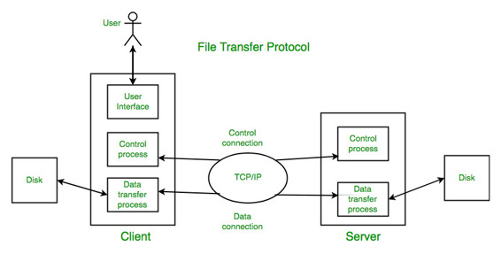

Prerequisite : Protocols in Application Layer
File Transfer Protocol(FTP) is an application layer protocol which moves files between local and remote file systems. It runs on the top of TCP, like HTTP. To transfer a file, 2 TCP connections are used by FTP in parallel: control connection and data connection.

What is control connection?
For sending control information like user identification, password, commands to change the remote directory, commands to retrieve and store files etc., FTP makes use of control connection. Control connection is initiated on port number 21.
What is data connection?
For sending the actual file, FTP makes use of data connection. Data connection is initiated on port number 20.
FTP sends the control information out-of-band as it uses a separate control connection. Some protocols send their request and response header lines and the data in the same TCP connection. For this reason, they are said to send their control information in-band. HTTP and SMTP are such examples.
FTP Session :
When a FTP session is started between a client and a server, the client initiates a control TCP connection with the server side. The client sends the control information over this. When the server receives this, it initiates a data connection to the client side. Only one file can be sent over one data connection. But the control connection remains active throughout the user session. As we know HTTP is stateless i.e. it does not have to keep track of any user state. But FTP needs to maintain a state about its user throughout the session.
Data Structures : FTP allows three types of data structures :
- File Structure – In file-structure there is no internal structure and the file is considered to be a continuous sequence of data bytes.
- Record Structure – In record-structure the file is made up of sequential records.
- Page Structure – In page-structure the file is made up of independent indexed pages.
FTP Commands – Some of the FTP commands are :
USER – This command sends the user identification to the server.
PASS – This command sends the user password to the server.
CWD – This command allows the user to work with a different directory or dataset for file storage or retrieval without altering his login or accounting information.
RMD – This command causes the directory specified in the path-name to be removed as a directory.
MKD – This command causes the directory specified in the path name to be created as a directory.
PWD – This command causes the name of the current working directory to be returned in the reply.
RETR – This command causes the remote host to initiate a data connection and to send the requested file over the data connection.
STOR – This command causes to store a file into the current directory of the remote host.
LIST – Sends a request to display the list of all the files present in the directory.
ABOR – This command tells the server to abort the previous FTP service command and any associated transfer of data.
QUIT – This command terminates a USER and if file transfer is not in progress, the server closes the control connection.
FTP Replies – Some of the FTP replies are :
200 Command okay.
530 Not logged in.
331 User name okay, need password.
225 Data connection open; no transfer in progress.
221 Service closing control connection.
551 Requested action aborted: page type unknown.
502 Command not implemented.
503 Bad sequence of commands.
504 Command not implemented for that parameter.
Anonymous FTP :
Anonymous FTP is enabled on some sites whose files are available for public access. A user can access these files without having any username or password. Instead, username is set to anonymous and password to guest by default. Here, the user access is very limited. For example, the user can be allowed to copy the files but not to navigate through directories.
Reference : https://en.wikipedia.org/wiki/File_Transfer_Protocol